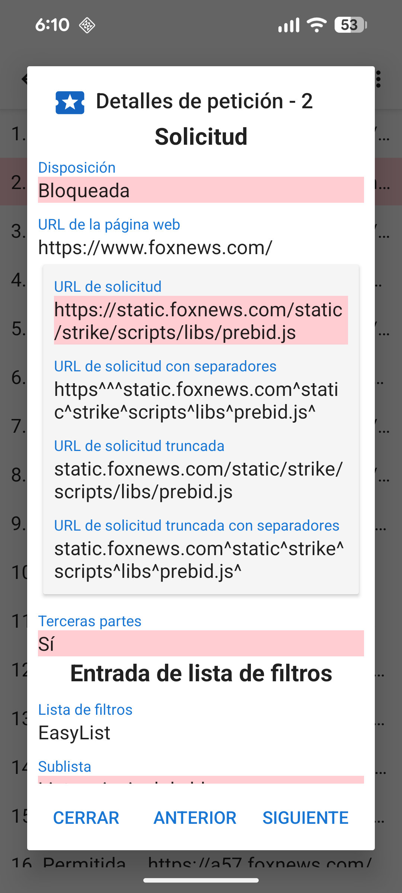
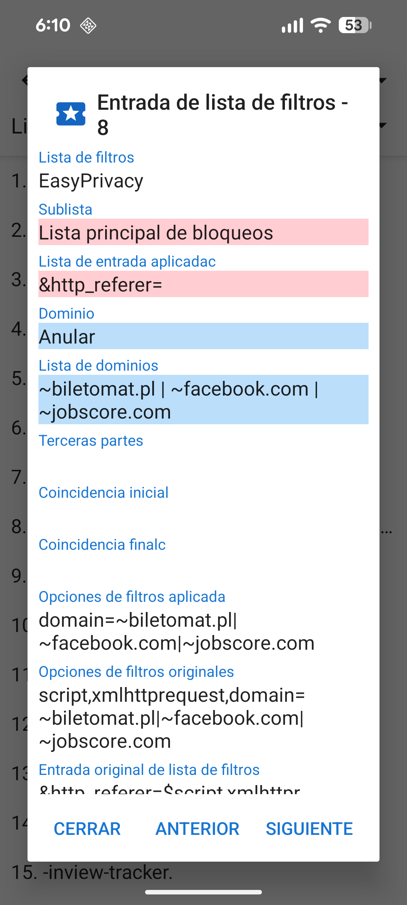

Cuando se carga una URL, normalmente realiza una serie de peticiones de recursos para CCS, JavaScript, imágenes y otros archivos. Los detalles sobre estas solicitudes se pueden ver en la Actividad de peticiones. El cajón de navegación tiene un enlace a la Actividad de peticiones y también muestra cuántas órdenes se bloquearon. Al tocar una solicitud se muestran los detalles de por qué se ha permitido o bloqueado.

Antes que una página web cargue un recurso, se comprueba con la lista de filtros que está habilitada en el siguiente orden:
Todas estas listas excepto la primera están basadas en la sintaxis de Adblock. UltraPrivacidad y UltraList son mantenidas por Stoutner. Las tres últimas listas de filtros proceden del proyecto EasyList.
Las entradas sin procesar de las listas de filtros se procesan en 6 sublistas.
Las listas de dominios iniciales se comparan con el comienzo del dominio. Son muy comunes y colocarlas en su propia sublista permite una comprobación más eficiente de la CPU de las solicitudes de recursos. Las lista de expresiones regulares siguen la sintaxis de las expresiones regulares.
El contenido de las listas de filtros se puede ver seleccionando Listas de filtros
desde el meníú desplegable de opciones (tres puntos en la esquina superior derecha) de la actividad Solicitudes.

Debido a las limitaciones de WebView, Navegador Privado implementa una interpretación simplificada de la sintaxis de Adblock. Encontrará una descripción más detallada de cómo se procesan las entradas de la lista de filtros en stoutner.com.